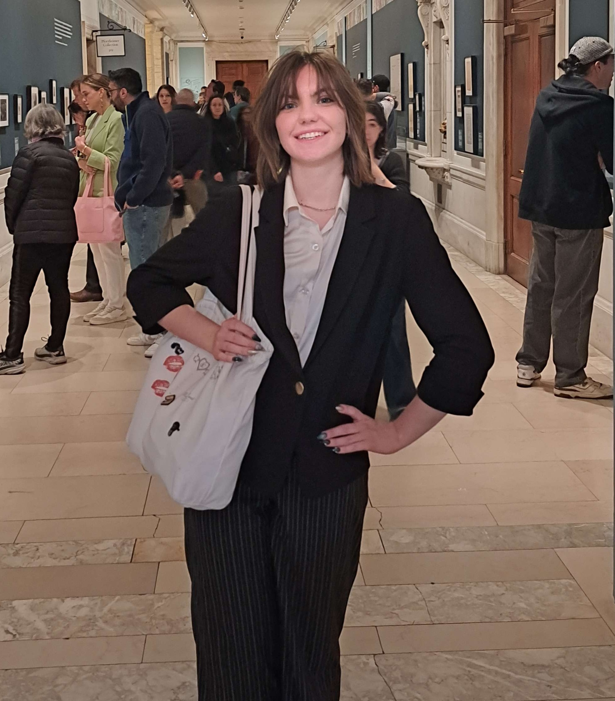
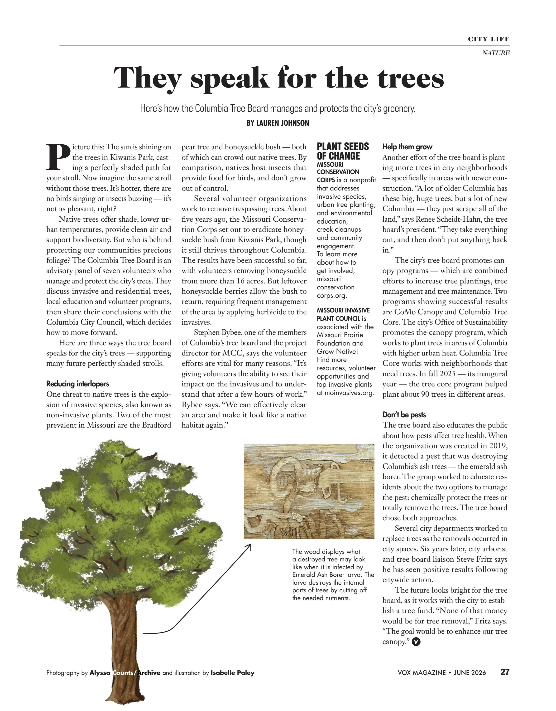

JOURNALISM · DESIGN · ILLUSTRATION
LAUREN
JOHNSON
Driven by curiosity.
Dedicated to creativity.
—
26
ABOUT ME
WRITER / DESIGNER / ILLUSTRATOR
WHO I AM
I am a senior at the University of Missouri. I am majoring in journalism with an emphasis in reporting and writing, and a minor in art. I have a strong focus toward writing about the environment and issues that affect society. In addition, I have a creative eye for graphic design.

MY JOURNEY
I have been using Adobe programs since high school for my magazine club class. I have roughly eight years experience using InDesign and six years experience with Photoshop and Illustrator. I also have the capability of using Premiere Pro and Audition.
MY ROLES
I am one of the Art Directors for Vox Magazine and I am also a feature writer for Vox Magazine. In addition to other outlets, I have works from the Columbia Missourian as a writer and I am also a page designer. In the organization world, I am the Magazine Director for Her Campus at Mizzou as well as a staff writer. I am also the Magazine Club vice president.
SELECTED PROJECTS · 2026
WORK
COLLECTION
NARRATIVE
WRITING
Writing clips from Columbia Missourian and Vox Magazine.

MY
EXPERIENCE
WRITER / DESIGNER / ILLUSTRATOR
WRITER & ART DIRECTOR
I started as a city life writer for Vox Magazine in spring 2026, where I pitched articles centered toward the city. I first started as a Design Assistant in fall 2025 where I assisted designing for department pages. I was the transferred to Assistant Art Director in Spring 2026, then became Art Director in June 2026 where I have gotten to design feature stories and covers.
WRITER & DESIGNER
I started as a reporter and writer for the Columbia Missourian through J4180 (News Content Creation) where I reported and wrote articles on the same day every other week. In addition, I became a page designer at the start of May 2026 where I assisted the Columbia Missourian through designing page layouts for the print edition.
CONTACT DETAILS
LET'S
CONNECT
I'm interested in designing magazine pages that tell a story and stories that show a persons life.
GET IN TOUCH